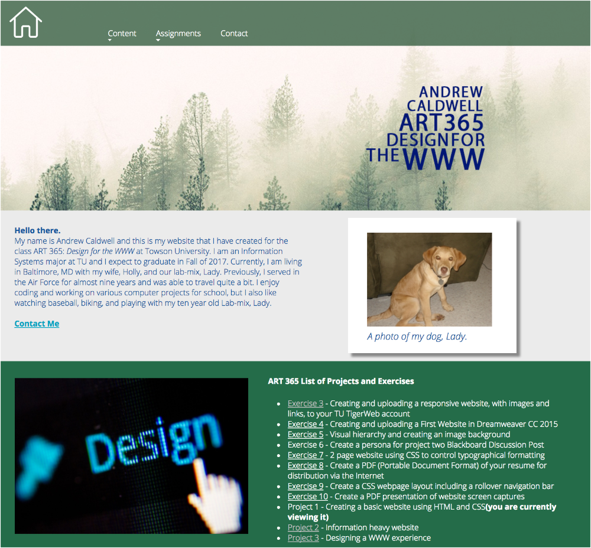
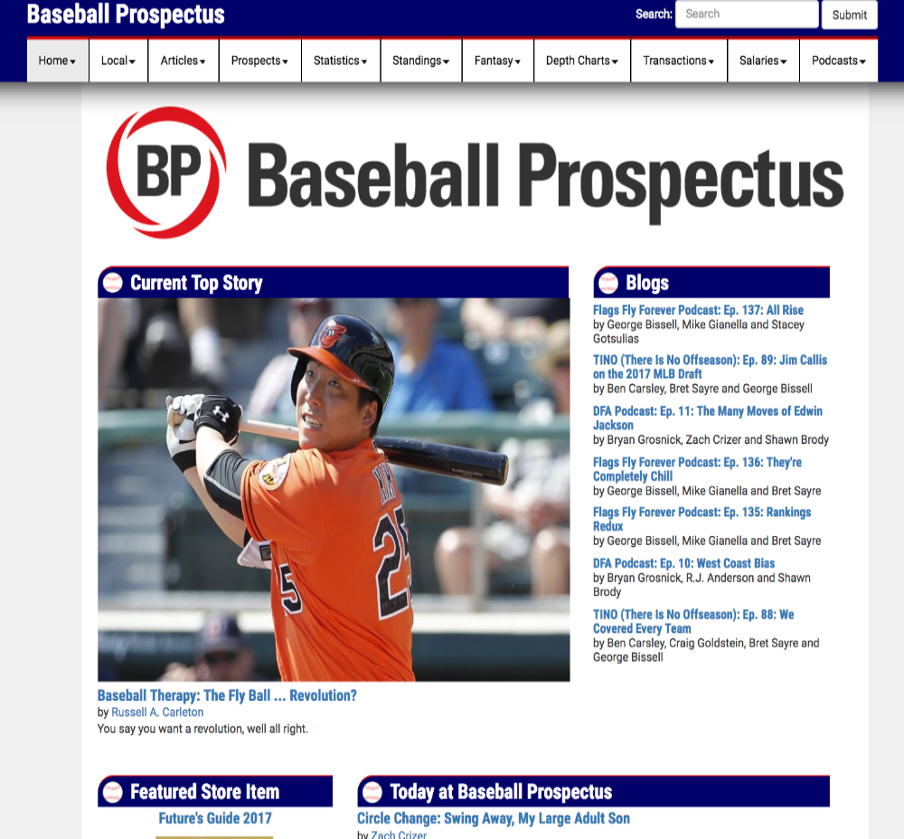
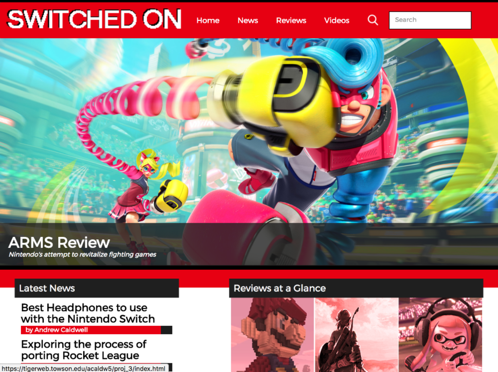

-
Website #1
This was my first website created for ART365, Design for the WWW, taken during Summer 2017. The purpose of the site was to act as a landing page for the remainder of the exercises and projects we would be completing over the course of the semester.
-
Website #2
This was my second website created for ART365, Design for the WWW, taken during Summer 2017. We were tasked with redesigning an existing information heavy website. I chose Baseball Prospectus to redesign. The website, aside from the general content and images, was built using HTML, CSS and Bootstrap.
-
Website #3
This was my third website created for ART365, Design for the WWW, taken during Summer 2017. The aim was to create an original, full-fledged website based on a hobby or something we were interested in. I chose to make a website centered around covering video game news related to the Nintendo Switch. The website, aside from the general content and images, was built using HTML, CSS and Bootstrap.